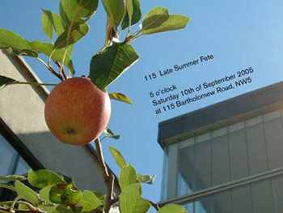
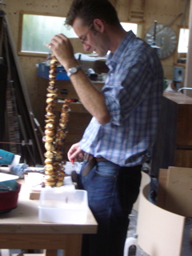
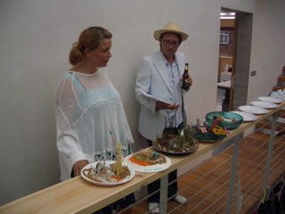
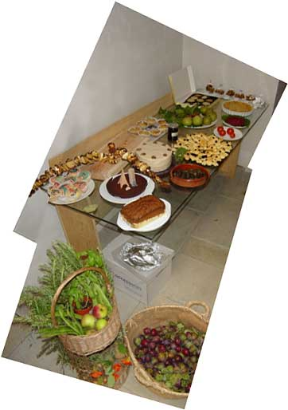
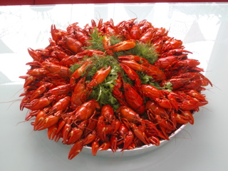
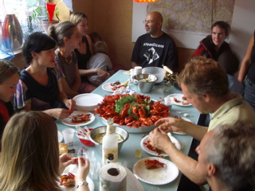
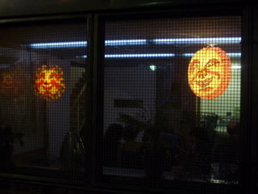

Summer Fête 2005
Workplace Co-op 115’s late Summer Fête: the International Judge is questioned

On Saturday 10 September 2005, around 80 people gathered in the building for the first 115 summer fête. Following the model of a village fête, we had competitions: ‘landscape on a plate’, mobiles (hung in the atrium), and home-produce. Earlier that week a fishing sub-committee had made a large and impressive haul of crayfish from the Kennet & Avon Canal, and cooked it. The fishing trip had been documented in a movie, which was projected in the kitchen, above the dish itself. In the front courtyard there was bunting and a barbecue. We had invited Maarten de Reus, one of the initial occupants and now an honoured associate, to come and judge the competitions. Given the high standard of the exhibits, this was a difficult task, and concerning one of the home-produce entries, it gave rise to a serious exchange of views. This is documented in the emails which we reproduce verbatim below.
21.09.2005
FAO: The head international judge of the home-produce competition
Dear Mr (de Reus)
I would hereby like to take the opportunity to appeal the decision reached by your panel in the home-produce competition of 09/10/2005.
While the winning entries were clearly good efforts deserving of recognition, an even superior competitor seems to have been mistakenly overlooked. I am referring to the most delightful ‘twin profiterole’, a truly contemporary work, not only of aesthetic value and outstanding taste, but most importantly of highly political content. I was deeply moved by the time-based aspect of this piece. The slow collapse and eventual annihilation of the two towers struck me as a re-enactment of the sad events that we have just had a chance to commemorate again on their fourth anniversary, just one day after the home-produce competition. While borrowing from preceding movements such as action and performance art, the twin profiterole always remains rooted in and relevant to today.
I trust that you will share my admiration for this brave, novel piece and that the jury will give belated recognition to the ‘twin profiterole’, or should I say ‘profitowerole’.
Yours faithfully,
Olga Wukounig
New York City, 09/21/2005
22.09.2005
Al Qaeda are known to hate our decadent Western ways, French patisserie no doubt included.
Could it be that Maarten was got at?
Robert
22.09.2005
While one could certainly appreciate the structural daring of this piece, its somewhat tendentious and possibly ambiguous political overtones – not helped by these ‘French’ associations – posed a considerable test of our judge’s capacity to act as a disinterested international arbitrating presence. In these circumstances, the best course could be to re-run the competition after a suitable interval. (It tasted great – and I would also be happy to have a taste of Jenny’s chocolate cake, with the disappearing Eiffel Tower.)
Robin
22.09.2005
Dear Olga Wukounig
It is my honour as the head of the general international judges committee to congratulate you with your striking letter. I can tell you it did win a second prize in the home-produce competitions appeal letters competition. Congratulations indeed.
Now on the subject of your splendid letter…
There are two reasons why the ‘twin profiterole’ did not win any prize.
The first one is the minor one and has to do with moral fatigue of some of the jury members. This international jury has very recently seen many home products on the continent that seem to come from minds that confuse the realm of home-baking with the realm of horrific historic events. After having seen the ‘Srebrenica-Stew’ of miss Horsting from the Hague at the anniversary of the mass murders in the Balkan during a home baking competition in Maastricht, and the ‘Arbeit Macht Frei-Cake’ of miss Lavevre during the annual baking event in Brussels that was held close to the day that celebrated the 50th anniversary of the liberation of Auschwitz-Birkenau, we ourselves thought: enough is enough, it should be time to take a stand! But alas, little we have to say about this…
That is because the second reason is the far more important one. We as professional international judges are but mediators for a higher authority. As you could have witnessed, the lovely miss Melkerson performed Wallekure-Chants prior to the judging. These silent chants provoke a powerful trance for those in the know. (I also refer to the many photographs that have been taken of the jury at work, for on them one can clearly see the heightened state of meta-home-baking- consciousness that had been installed in both members of the judging committee). I can assure you that the choices as declared by us had come to us with no interference of the senses nor the self of any of the individual members of the international judging committee.
I regret to say that therefore correspondence about the outcome of the home-produce competition is futile.
yours faithfully
Maarten de Reus
03.10.2005
Hi Peter,
I greatly enjoyed following the appeal process – though it made me realise how naive and lax I had been with my own casually subjective comments, completely failing to take on board the international political implications of the works and indeed eating many of them without thought for the social signification process, thereby erasing politics in the name of ‘taste’ – how bourgeois can one get? I see now how much more complex it all is… and such hard work! all the best,
Judith
now the pictures

Duncan Kramer in the 115 workshop, putting the final touches to his ‘twin profiterole’ home-produce entry.

Marijke Bruggink and judge Maarten de Reus inspecting landscapes on plates.

Some of the home-produce entries: the ‘twin profiterole’ was by then in a state of collapse. Note the chocolate cake with Eiffel Tower on the left of the table.

Crayfish, caught by Ryan and Duncan.

Guests eat crayfish.

The party draws to a close.